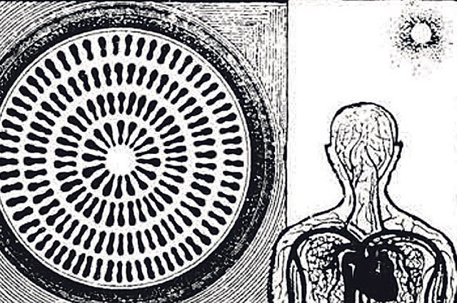

Все люди, конечно, понимают, что Вечность творит Сам Абсолют... ибо Вечность, как и ВСЁ в Пространстве, имеет многоуровневое строение, ведь из Малого формируется Большое, также как и Большое состоит из Малого!

Принято, что в Природе все твёрдые тела можно рассматривать как композитные материалы, основой которых являются два компонента, первым из которых является МАТРИЦА, а вторым – приграничное или межматричное пространство. Причём главную роль в устойчивости или долговечности твёрдого тела играет, как это ни странно звучит, именно межматричное пространство, принимающее на себя все информационные нагрузки внешнего Пространства.
Методом кристалла
Согласно теории дислокаций граница зерна в металле (твёрдом теле) представляет собой поверхность между двумя монокристаллами с совершенной кристаллической структурой, примыкающими так, как будто это одно сплошное твёрдое тело. Считается, что граница зерна может быть произвольной формы, однако в равновесных условиях полной Гармонии она должна быть совершенной, что и уменьшает поверхностную энергию до минимума.
Предполагая полную аналогию процессов поверхностного натяжения, натяжение границы зёрен можно определить как обратимую работу (Y), которую необходимо потратить для образования единицы площади граничной поверхности, при постоянстве всех остальных параметров:
Y = dF/dA............(1)
где: F – свободная энергия,
A – пограничная поверхность.
Поверхностная свободная энергия (Y) зависит от ориентации поверхности, что проявляется в стремлении границы развернуться в положение с минимальным значением поверхностной энергии, что, в свою очередь, приводит к появлению вращательных членов, а значит, к появлению торсионных полей.
Известно также, что биологические объекты (ткани человека) можно рассматривать как природные композиционные материалы, где, по нашему мнению, главную роль играет межклеточное пространство. По аналогии с твёрдым телом (кристаллами) принимаем, что клетка крови (эритроцит) находится в пограничном пространстве (плазме), где каждая из клеток связана с окружающими клетками межклеточными связями, обеспечивающими гармонизацию внутреннего пространства, точнее, гармонизацию частей тела человека, а значит, обеспечение состояния здорового покоя.
Поэтому этот гибкий (упругий) клеточный каркас легко адаптируется ко всем изменениям внешней и внутренней среды, обеспечивая устойчивость к стрессовой ситуации любого масштаба. Однако при стрессовых ситуациях, вызванных собственным несовершенством (грехами и пороками), внутренней поверхностной энергии не хватает для того, чтобы поддержать клеточный (упругий) каркас в равновесии.
Обращение к Создателю
Разрушение клеточного каркаса приводит к тому, что эритроциты, теряя поверхностную энергию, теряют и устойчивое положение в кровеносной системе, что провоцирует слипание эритроцитов или формирование «монетных» столбиков, провоцирующих, в свою очередь, глубокое нарушение равновесия в кровеносной системе человека.
По нашему мнению, искреннее обращение человека с Молитвой к Создателю, которое может быть услышано, повышает поток внешней (КОСМОСА) энергии, которая в свою очередь повышает внутреннюю (поверхностную) энергию, что стабилизирует клеточный каркас человека, обеспечивая не только выздоровление, но и сопротивление организма внешним воздействиям.
Проведённые нами эксперименты показали, что моделирование смерти (клеток) позволяет проанализировать изменение электрической (поверхностной) энергии до и после Молитвы или до и после введения человека в стрессовое состояние.
Нами было принято, что электрическая энергия человека в «естественном» состоянии, хотя выбрать момент естественного состояния в условиях общего стрессового состояния человечества очень трудно, является характеристикой покоя: есть Э1, тогда электрическую энергию после Молитвы (энергию высшего порядка) можно представить как сумму энергий.
Эобщ = Э1 + Э2,................(2)
где Э2 – электрическая энергия, полученная человеком от Создателя, или энергия высшего порядка.
Тогда легко определяется участие (доля) Создателя в обеспечении энерговооружённости человека как разность значений общей электрической энергии в эксперименте и электрической энергии человека в «естественном» состоянии, или:
Э Бога = ЭОбщ – Эчеловека .......3
Соотношение величин электрических энергий не только отделяет человека Веры от человека Неверия, но и показывает сверхвозможности человека–Бога или отделяет обычного спортсмена от человека – спортсмена высших достижений.
Механизмы энергии
Рассмотрим подробно механизм изменения (повышения и понижения) электрической энергии в момент обращения человека к Богу, ибо по нашему мнению, прямое обращение к Богу приводит не только к перераспределению энергетических потоков (электрической энергии), но и к упорядочению межклеточного Пространства, гармонизируя внутреннее пространство человека!
Рассматривая клетку как совершенный фрактал, сотворённый Создателем, обеспечивающий за счёт биохимических процессов жизнедеятельность не только самой клетки, но и всего организма (природного композитного материала, состоящего из клеток и межклеточного пространства), предполагаем, что накопление энергии (информации), переходящее с Внешнего (Космического) Пространства во внутреннее (межклеточное) пространство человека, происходит не в клетке как в совершенном фрактале, а в межклеточном, гибком каркасе.
По нашему мнению, только межклеточное пространство способно принять и перераспределить электрическую энергию внутри организма человека, гармонизируя человека и Космическое Пространство. Только при такой позиции или только при таком представлении можно найти объяснение увеличению электрической энергии в момент Молитвы, которое фиксируется в клеточном пространстве объёмом 0,1 мл крови.
Можно предположить, что искреннее обращение к Создателю обеспечивает равномерную фрагментацию внутреннего пространства человека, не только гармонизируя его с внешним, Космическим Пространством, но и обеспечивая нейтрализацию тех искажений, которые были накоплены человеком в процессе жизненного цикла.
Метод Чижевского
Считаем целесообразным дать пояснения к формированию приграничной области как для твёрдого тела, так и биологического объекта, принимаемого в науке за образец жидкого кристалла, ибо моделей, хоть как–то объясняющих физику приграничного пространства, достаточное количество, но ответа как не было, так и нет.
Прежде всего рассмотрим предположение известного физика А. Л. Чижевского, по объяснению характера движущейся крови, ибо до него считалось, что эритроциты в потоке крови движутся совершенно хаотично. По мнению А. Л. Чижевского, внутри кровеносных сосудов эритроциты образуют стройные кольца, плоскость которых перпендикулярна к оси сосуда.
По мнению учёного, при трении о плазму крови эритроциты приобретают электрические заряды. Когда же эритроцит вращается, эти заряды образуют круговой ток, в результате чего возникает магнитное поле. При этом эритроциты обращены один к другому одноименными полюсами, и между ними существует отталкивание, поэтому эритроцитное кольцо в целом оказывается упругим, устойчивым. Этому способствуют не только электрические и магнитные силы, но и силы гидродинамические, возникающие в движущемся потоке крови.
Эта модель получила своё подтверждение при микроскопических исследованиях, где были зафиксированы не только стройные кольца эритроцитов, но и их вращение. Кольца эритроцитов движутся в сосуде с разной скоростью – чем ближе к оси сосуда, тем быстрее. Вызывает много вопросов и сомнений позиция, согласно которой при разветвлении сосудов эритроцитные кольца на мгновения разрушаются, но затем почти немедленно восстанавливаются и продолжают своё стройное движение.
Модель природной ткани
Однако при микроскопическом исследовании образцов крови всех участников скрининга мы столкнулись с наличием «монетных» столбиков вне зависимости от возраста пациента. В этой связи нами было принято, что образование «монетных» столбиков является примером нарушения межклеточного каркаса (пространства), когда упругие связи (принимаем для простоты «пружинные связи») внутри природного композита начинают разрушаться, искривляя клеточный каркас.
Нами была предложена модель природного композиционного материала (тканей человека), в котором клетки соединены (удерживаются) «пружинной» конструкцией, обеспечивающей устойчивость клеточного каркаса!
При нарушении гармонии, внутреннего порядка этого клеточного пространства, связанного с негативной внутренней обратной реакцией, в жизни, называемой грехами и пороками, накапливаемыми с возрастом человека, происходит разрушение, прежде всего, элементов межклеточного пространства, играющего роль компенсаторного элемента, принимающего на себя стрессовые нагрузки отрицательного знака.
При неадекватном реагировании на стрессовую ситуации первым делом начинает нарушаться (рваться) межклеточное пространство (межклеточный упругий каркас), что приводит к проявлению хаоса, а значит, к образованию «монетных» столбиков.
В случае нарушения связей для восстановления клеточного каркаса собственной внутренней энергии, генерируемой клетками в естественных условиях, уже не хватает, поэтому для продолжения полноценной жизни, а значит для разрушения информационных кластеров с отрицательной энергией человеку требуется или полное перепрограммирование целей и задач жизни, либо обращение к внешнему Источнику Космической Информации.
Образование «монетных» столбиков в крови человека говорит о том, что человек либо пропустил большое количество отрицательных (негативных) информационных ударов, либо всю свою жизнь находится в состоянии внутреннего Духовного хаоса, даже не пытаясь изменить свою внутреннюю позицию.
В этом случае можно порекомендовать только два способа вернуться в нативное состояние энергетического и информационного баланса организма человека, из которых первый является обязательным, ибо без кардинального пересмотра собственной позиции на жизнь, а значит – перехода из состояния гнева и негатива в состояние Всепрощающей Любви, не стоит даже надеяться, что что–то может измениться само собой!
Молитва и гармония
Вторым способом, описанным подробно во всей человеческой литературе, является Обращение или Молитва к Создателю с просьбой о Прощении и гармонизации человека и Пространства.
«Поверьте Мне, только глубокое САМОсовершенствование позволит вам осознать себя фрактальным подобием Творцу, познать своё энергетическое строение и увидеть Свет, Творящий в своём внутреннем Высшем «Я»! (Откровения людям Нового века, Послание от 27.11.10)
Изучение динамики изменения межклеточного пространства с помощью прибора Метатрон, микроскопии и собственного приборного комплекса по регистрации изменения электрических и акустических импульсов показало, что для всех участников эксперимента наблюдался временной интервал передачи информации (Молитвы), имеющий разное значение, в зависимости от индивидуальных характеристик, а точнее, в зависимости от уровня внутренней Духовности человека.
Было установлено, что для каждого человека имеется временной интервал передачи информации внутри клеточного пространства (каркаса), который может быть характеристикой целостности или порядка межклеточного пространства.
Эксперименты показали, что временной фактор влияния Молитвы или обращения к Создателю на состояние межклеточного (каркаса) пространства изменялся в пределах от нескольких секунд до 3–х часов!
Для некоторых участников эксперимента полное исчезновение «монетных» столбиков было зафиксировано уже через 30 минут, максимальный временной интервал преображения из «монетных» столбиков в равномерную массу эритроцитов составил 180 минут.
Нами было установлено, что без Молитвы в крови пациентов не происходит никаких структурных изменений, которые могли бы изменить энергоинформационное состояние межклеточного «каркаса».
Во всех случаях скрининга было установлено, что после молитвенного энергетического воздействия (импульса) на организм человека происходит выравнивание или упорядочение межклеточного пространства и уменьшение «монетных» столбиков, а значит, происходит выравнивание энергоинформационного поля человека или гармонизация человека и Пространства, а значит, наблюдается переход из состояния хаоса в порядок.
До молитвы участники эксперимента по значениям суммы электрических сигналов естественным путём разделились на две группы с минимальной энергией (примерно 0,0003 Х 10–4Дж) и энергией практически на порядок выше (до 0,006 Х 10–4 Дж).
В процессе эксперимента было установлено, что при упорядочении (уменьшении «монетных столбиков) межклеточного пространства энергия поверхностного натяжения уменьшается, достигая своего минимального значения, достигая равновесного или гармоничного состояния.
Маслов Леонид Иванович, д.т.н., профессор, академик РАЕН,
Бородулин Вячеслав Васильевич, зам. генерального директора,
Козырева Татьяна Петровна, врач высшей категории,
Попова Елена Ивановна, врач высшей категории,
Карпова Ирина Юрьевна, научный сотрудник,
Пенкин Александр Григорьевич, к.т.н., директор ООО «СДС»